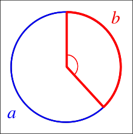

Todo empezó hace unos meses. Empezamos a colaborar con Agenda Propia organización que hace periodismo indígena en Colombia en una investigación en la cual queríamos encontrar un equilibrio entre los números y la identidad de las diferentes comunidades indígenas con las que estábamos trabajando.
De mil colombianos 44 pertenecen a una comunidad indígena
En esta artículo les cómo llegamos a estas visualizations a partir de hojas de cálculo del censo indígena para mostrar cifras que representaran bien a las comunidades.
Lee la investigación completa aquí con las visualizations, fotografías y traducciones a los idiomas de las comunidades: Wayuu, Gunadule, and Tikuna.
Creemos que es muy importante como equipo de datos apoyar a las organizaciones sociales y periodistas para mostrar las realidades de grupos vulnerables. Suele ocurrir que estos grupos ocupan los titulares en raras ocasiones cuando suceden eventos muy poco probables como estos artículos The Economist o el de New Yorker sobre la muerta de Antonio Bolívar, último miembro de una comunidad del Amazonas famoso por su aparición en la película nominada a los premios Óscar: El abrazo de la serpiente.
En un esfuerzo por poner un rostro humano a las historias de mujeres indígenas en Colombia que viven en la frontera con países como Venezuela, Brasil, Perú y Panamá. Nos embarcamos con el equipo de Agenda Propia en un camino para conectar números y datos enterrados en el censo del país con los rostros, fotografías, historias narrativas y elementos visuales de comunidades de la Amazonía, el desierto de la Guajira y la región del Darién.
Los elementos visuales que decidimos utilizar fueron los que emergen de sus tejidos y patrones ancestrales.

380.460 son Wayuu en el lado colombiano de ellos 197.140 son mujeres, su idioma: Wayuunaiki. Hay 542.043 Wayuus a ambos lados de la frontera colombo-venezolana
Decidimos hacer una visualización de datos que mostrara patrones indígenas y sus diferentes proporciones a partir de los números de censo con el fin de acompañar las historias. Comenzamos a buscar formas de organizar los números en puntos con los patrones indígenas y círculos, con la idea de que los puntos formaran crículos en una disposición que pareciera más organica.
Pensamos en organizar los puntos en espiral, aquí empieza el código. No sabíamos que había tantas posibilidades para crear espirales. Aquí algunas:
- Espiral de Arquímedes
- Círculo evolvente
- Espiral de Atzema
- Espiral logarítmica
- Espiral de Vogel
La espiral logarítmica estaba fuera de discusión, ya que queríamos una espiral que pareciera densa y con que mostrara una densidad de puntos uniforme en un círculo. La espiral de Vogel no es del todo una espiral, pero hablaremos de eso más adelante. La espiral de Atzema para n grande se aproxima a la espiral de Arquímedes y comienza con una asíntota que se puede suprimir.
archimedean_spiral <- function(n, a = 0, b = 1, turns = 3){
# b separation of turns
t <- seq(0, turns * 2 *pi, length.out=n)
x <- (a + b*t) * cos(t)
y <- (a + b*t) * sin(t)
d <- tibble::tibble(x, y)
d$n <- 1:n
d
}
circle_involute <- function(n, a = 2){
# https://mathworld.wolfram.com/CircleInvolute.html
t <- seq(0,5*pi, length.out=n)
x <- a * (cos(t) + t * sin(t))
y <- a * (sin(t) - t * cos(t))
d <- tibble::tibble(x, y)
d$n <- 1:n
d
}
atzema_spiral <- function(n, turns = 3){
t <- seq(0, turns * 2 *pi, length.out=n)
x <- sin(t)/t - 2 * cos(t) - t * sin(t)
y <- cos(t)/t - 2 * sin(t) + t * cos(t)
d <- tibble::tibble(x, y)
d$n <- 1:n
d
}
vogel_spiral <- function(n){
t <- 1:n
r <- sqrt(t)
golden_angle <- pi * (3 - sqrt(5))
theta <- t * golden_angle
x <- r * cos(theta)
y <- r * sin(theta)
d <- tibble::tibble(x, y)
d$n <- 1:n
d
}
Aquí las espirales generadas con el código de arriba.
{kind=link}
Necesitamos espirales que funcionen bien con diferentes números de puntos en el orden de decenas o incluso en miles. Intentamos usar el círculo evolvente, pero con la espiral de Arquímedes, uno puede tener un poco más de control sobre el número de vueltas y su separación.
Veamos cómo la espiral de Arquímedes funciona con diferentes números de puntos. Cuando vemos las espirales no como paths sino como puntos, obtenemos una imagen diferente. Para nuestro caso de uso específico, necesitábamos puntos que llenaran un círculo de manera uniforme, independientemente de la cantidad de puntos que usemos, para esto seguimos adelante e hicimos más ajustes a nuestra función de modo que pudiéramos aproximar el arco en la espiral de Arquímedes y así mantenerlos arcos constantes.

No estábamos contentos con la distribución de puntos para diferentes “n”. Al final de la espiral siempre se ve cortada y no da la impresión de que los puntos llenen un círculo de forma uniforme.
Fue entonces cuando probamos la espiral de Vogel. La cual toma en cuenta el Ángulo Divino que es igual a la Divina Proporción solo que a lo largo de dos arcos en un círculo. Se agrega cada puntorotando 137.5077... grados o pi ( 3 - sqrt(5)) radianes y con un radio proporcional a sqrt(n).

El patron generado con esta espiral luce muy orgánico y funciona muy bien para múltiples valores de n puntos, basta con asegurarse que el tamaño de los puntos se ajusta en la medida en que se usan diferentes valores de n.

Disfruta algunos patrones de diferentes comunidades indígenas de Colombia.

Este es el patrón Gunadule, una comunidad indígena en la frontera de Panamá y Colombia, hay 2610 miembros de esta comunidad
{kind=link}
Hay 13.842 Tikunas en Colombia, viven en la Amazonía
Si tiene curiosidad acerca de las animaciones, simplemente configuramos los patrones como polígonos y usamos [{transformr}] (https://github.com/thomasp85/transformr)